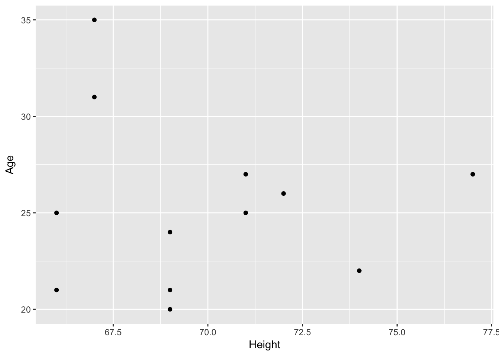
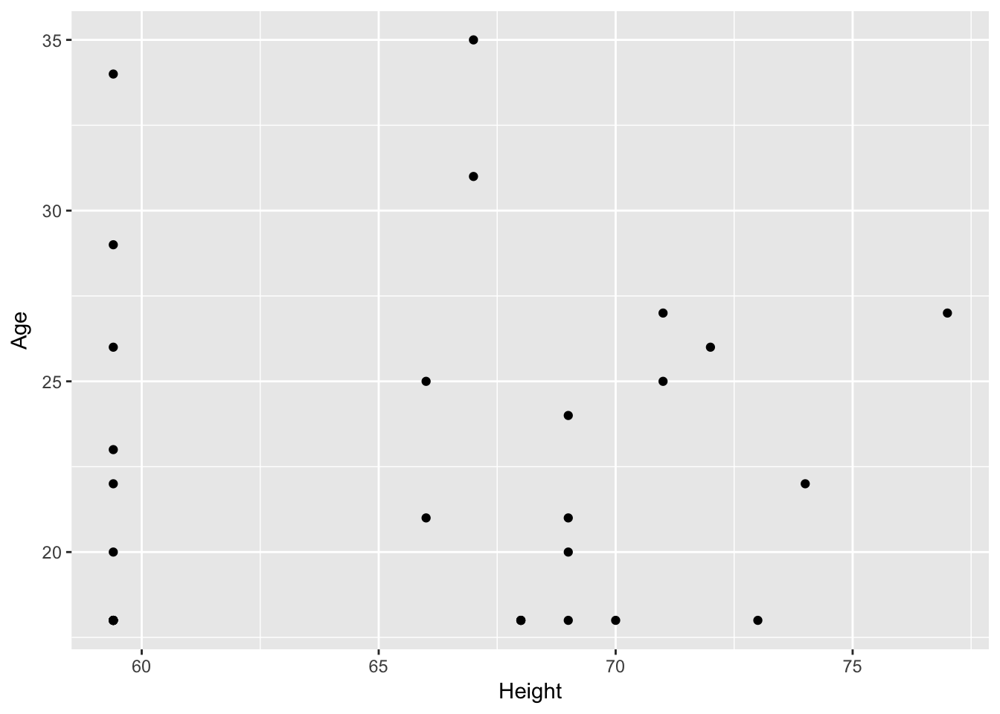
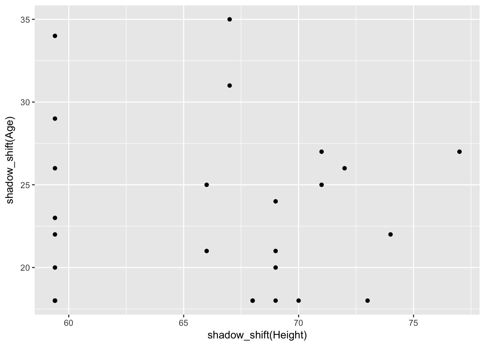
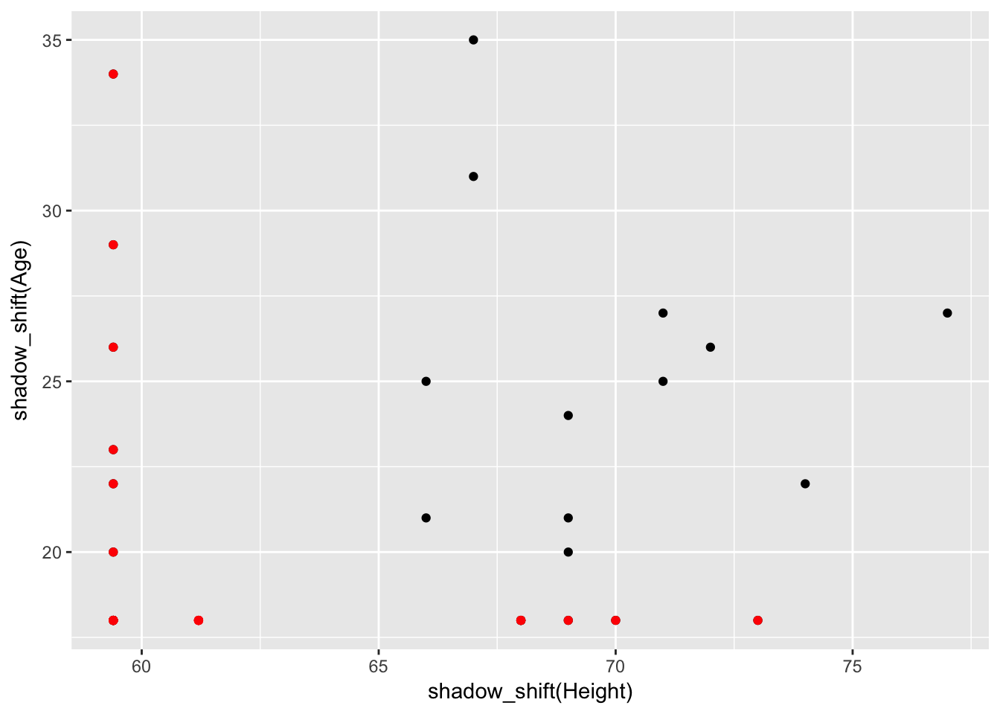
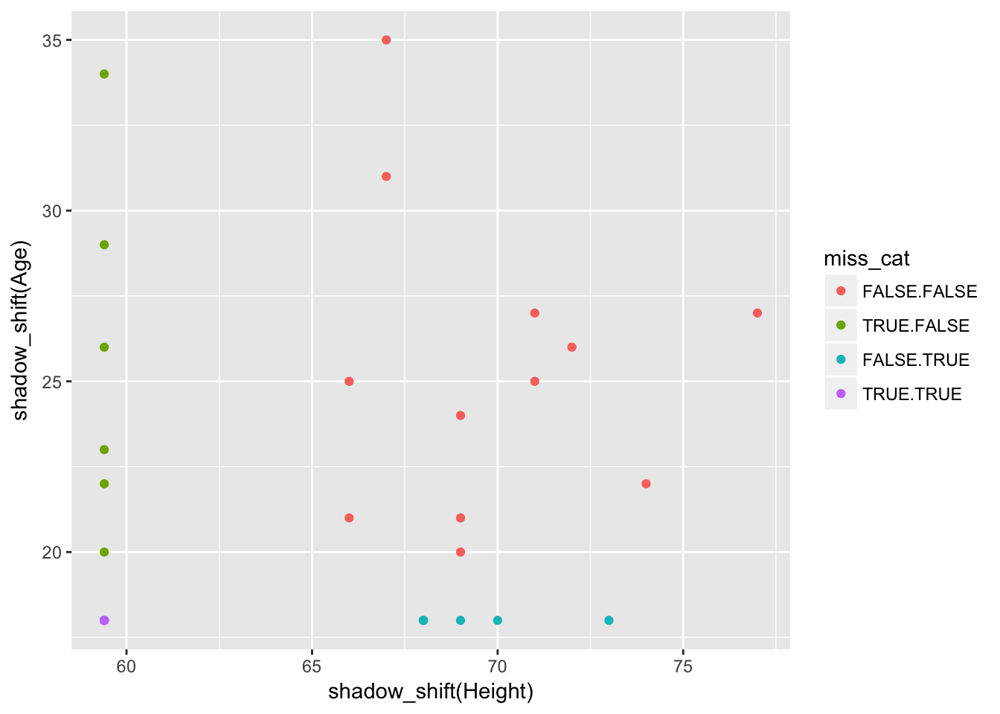
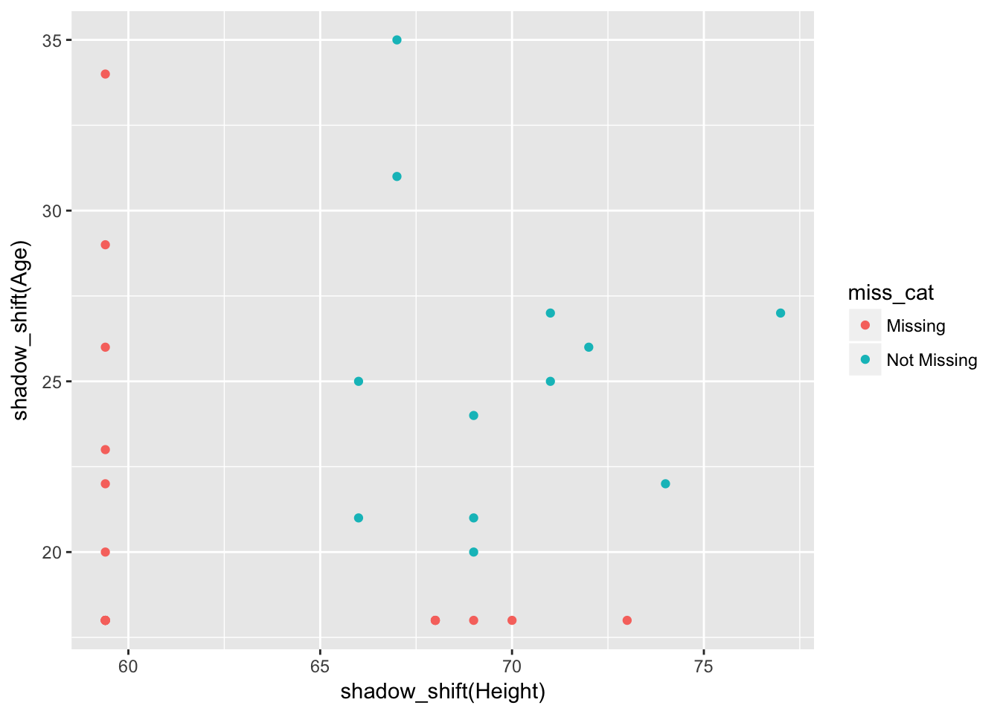
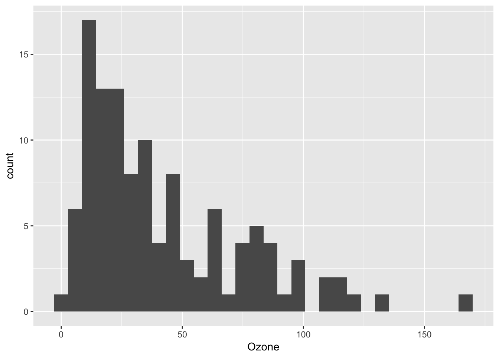
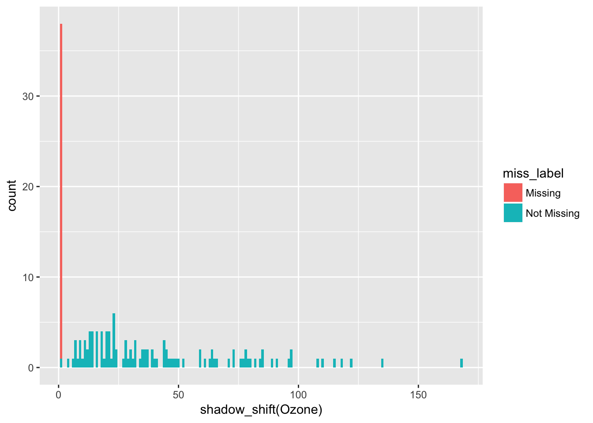

Mechanics of shadow_shift in ggplot2
Nicholas Tierney
2016-12-31
knitr::opts_chunk$set(message = F)This vignette describes the mechanics behind shadow_shift, and steps you through how the functions work. It is not intended to be a user guide on how to use naniar - for that please read the README on GitHub.
We first create some data using the wakefield package
library(dplyr)
library(wakefield)
set.seed(1531)
df <-
r_data_frame(
n = 30,
id,
race,
age,
sex,
hour,
iq,
height,
died,
Scoring = rnorm,
Smoker = valid
) %>%
r_na(prob=.4)Exploring the data, we see that ggplot2 omits data points.
library(ggplot2)
ggplot(data = df,
aes(x = Height,
y = Age)) +
geom_point()## Warning: Removed 18 rows containing missing values (geom_point).
One idea is to plot the missing data as 10% below the minimum value for that variable.
df %>%
# make missing values 10% below the minimum value for that variable
mutate(Height = ifelse(is.na(Height),
yes = min(Height, na.rm = T)*0.9,
no = Height),
Age = ifelse(is.na(Age),
yes = min(Age, na.rm = T)*0.9,
no = Age)) %>%
ggplot(data = .,
aes(x = Height,
y = Age)) +
geom_point()
So we can make a window function that transforms missing values to be 10% below the minimum value for a variable
# is.na.data.frame(df)
df.shadow <- as.data.frame(is.na.data.frame(df))
# make a function for creating a true/false shadow matrix
shadow_df <- function(x){
x %>%
is.na.data.frame %>%
as.data.frame %>%
as_data_frame
}
# remember that TRUE = missing
shadow_df(df)## # A tibble: 30 × 10
## ID Race Age Sex Hour IQ Height Died Scoring Smoker
## <lgl> <lgl> <lgl> <lgl> <lgl> <lgl> <lgl> <lgl> <lgl> <lgl>
## 1 FALSE TRUE FALSE TRUE FALSE FALSE TRUE FALSE FALSE FALSE
## 2 FALSE TRUE TRUE FALSE FALSE TRUE TRUE TRUE FALSE TRUE
## 3 FALSE FALSE TRUE FALSE FALSE TRUE TRUE TRUE FALSE FALSE
## 4 FALSE TRUE FALSE TRUE TRUE FALSE FALSE FALSE TRUE FALSE
## 5 FALSE TRUE FALSE FALSE TRUE FALSE TRUE FALSE TRUE FALSE
## 6 FALSE FALSE TRUE FALSE TRUE FALSE TRUE TRUE TRUE FALSE
## 7 FALSE TRUE FALSE FALSE FALSE TRUE FALSE FALSE FALSE FALSE
## 8 FALSE TRUE TRUE FALSE TRUE FALSE TRUE FALSE FALSE FALSE
## 9 FALSE FALSE FALSE FALSE TRUE TRUE FALSE TRUE TRUE FALSE
## 10 FALSE FALSE FALSE FALSE FALSE FALSE FALSE FALSE FALSE FALSE
## # ... with 20 more rows# Make a window function that transforms missing values to be 10% below the minimum value for that variable
shadow_shift <- function(x){
ifelse(is.na(x),
yes = min(x, na.rm = T)*0.9,
no = x)
# min() might change to something related to the data range
# possibly use range() to determine the shadow shift
# Need to also add some jitter/noise to these points to seperate out repeats of the same value
# for factors, need to add another level (smaller than smallest)
# need to think about how time is handled as well.
}Which means we can do something like this
# make missing values 10% below the minimum value for that variable
ggplot(data = df,
aes(x = shadow_shift(Height),
y = shadow_shift(Age))) +
geom_point()
However, we now we just need to add in some colour to these points, so that missing data takes upon this “pre-attentive” phase. We make a new dataset, that is basically contains only the shifted data.
df.test <-
df %>%
mutate(Height = shadow_shift(Height)) %>%
# filter out those observations that are greater than the min
filter(Height < (min(Height, na.rm = T)*1.1))
df.test.2 <-
df %>%
mutate(Age = shadow_shift(Age)) %>%
# filter out those observations that are greater than the min
filter(Age < (min(Age, na.rm = T)*1.1))ggplot(data = df,
aes(x = shadow_shift(Height),
y = shadow_shift(Age))) +
geom_point() +
geom_point(data = df.test,
aes(x = Height),
colour = "Red") +
geom_point(data = df.test.2,
aes(y = Age),
colour = "Red")
Colour by interaction, which creates all the different combinations of levels of factors.
miss_cat <-
df %>%
shadow_df %>%
select(Height, Age) %>%
interaction
miss_cat## [1] TRUE.FALSE TRUE.TRUE TRUE.TRUE FALSE.FALSE TRUE.FALSE
## [6] TRUE.TRUE FALSE.FALSE TRUE.TRUE FALSE.FALSE FALSE.FALSE
## [11] TRUE.FALSE FALSE.FALSE TRUE.FALSE FALSE.TRUE FALSE.FALSE
## [16] TRUE.TRUE FALSE.TRUE FALSE.TRUE FALSE.FALSE FALSE.FALSE
## [21] FALSE.FALSE FALSE.FALSE FALSE.TRUE FALSE.FALSE TRUE.FALSE
## [26] FALSE.TRUE TRUE.FALSE FALSE.FALSE TRUE.TRUE FALSE.TRUE
## Levels: FALSE.FALSE TRUE.FALSE FALSE.TRUE TRUE.TRUEWe can then use this as a colour for missingness
# we can then colour by the missingness
df %>%
mutate(miss_cat = miss_cat) %>%
ggplot(data = .,
aes(x = shadow_shift(Height),
y = shadow_shift(Age),
colour = miss_cat)) +
geom_point() 
Getting closer now - we can now just filter the appropriate categories out, as we want TRUE.FALSE, TRUE.TRUE, and FALSE.TRUE to be the same level, we can then colour by missingness.
So we have this variable miss_cat, which we add to the data.
We can then use an ifelse statement to re-organise the factor levels.
# we can then colour by the missingness
df %>%
mutate(miss_cat = miss_cat) %>%
mutate(miss_cat = ifelse(miss_cat == "TRUE.FALSE" |
miss_cat == "TRUE.TRUE" |
miss_cat == "FALSE.TRUE",
yes = "Missing",
no = "Not Missing")) %>%
ggplot(data = .,
aes(x = shadow_shift(Height),
y = shadow_shift(Age),
colour = miss_cat)) +
geom_point() 
Instead of having an ifelse each time we want to do this, let’s generalize this to a function that reorganizes the miss_cat based upon the levels of missingness - shadow_cat
shadow_cat <- function(x){
ifelse(x == "TRUE.FALSE" |
x == "TRUE.TRUE" |
x == "FALSE.TRUE",
yes = "Missing",
no = "Not Missing")
}
df %>%
mutate(miss_cat = miss_cat) %>%
mutate(miss_cat = shadow_cat(miss_cat)) %>%
ggplot(data = .,
aes(x = shadow_shift(Height),
y = shadow_shift(Age),
colour = miss_cat)) +
geom_point() 
We shouldn’t have to create miss_cat to get this to work, so let’s make it into a function, which takes the data, and the variables we want, and performs interaction on them.
miss_cat <- function(df, var1, var2){
df %>%
shadow_df %>%
select(one_of(var1, var2)) %>%
interaction
}
df %>%
mutate(miss_cat = miss_cat(., "Height", "Age")) %>%
mutate(miss_cat = shadow_cat(miss_cat)) %>%
ggplot(data = .,
aes(x = shadow_shift(Height),
y = shadow_shift(Age),
colour = miss_cat)) +
geom_point() 
But now we have this redundant step of creating it using miss_cat, then refactoring it using shadow_cat. Really though, we can just put shadow_cat inside of miss_cat, to reduce coding.
miss_cat <- function(df, var1, var2){
df %>%
# make the data into a true/false data frame
shadow_df %>%
# choose the variables of interest
select(one_of(var1, var2)) %>%
# get all the combinations of the levels as factors
interaction %>%
# combine them into something sensible for our purposes
shadow_cat
}
df %>%
mutate(miss_cat = miss_cat(., "Height", "Age")) %>%
ggplot(data = .,
aes(x = shadow_shift(Height),
y = shadow_shift(Age),
colour = miss_cat)) +
geom_point() 
Miles had a couple of ideas, where we could combine all of the information within the data frame into one column, effectively encoding the missingness into a single column. However, one problem with this is that if columns are rearranged or removed, then this single column becomes incorrect.
A look at histograms
# displaying missingness for univariate histograms:
# this is quite a different routine compared to what I would be doing normally
# which is to say something like the bind_shadows methods, or something
library(dplyr)
library(ggplot2)
library(naniar)
ggplot(data = airquality,
aes(x = Ozone)) +
geom_histogram()## Warning: Removed 37 rows containing non-finite values (stat_bin).
airquality %>%
select(Ozone) %>%
mutate(miss_label = label_missing_1d(Ozone)) %>%
ggplot(data = .,
aes(x = shadow_shift(Ozone),
fill = miss_label)) +
geom_histogram(binwidth = 1)
# although, this now brings us to a strange question: how should we consider binning for missing values? And how will missing data be affected differently by different bins?